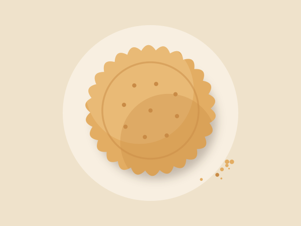
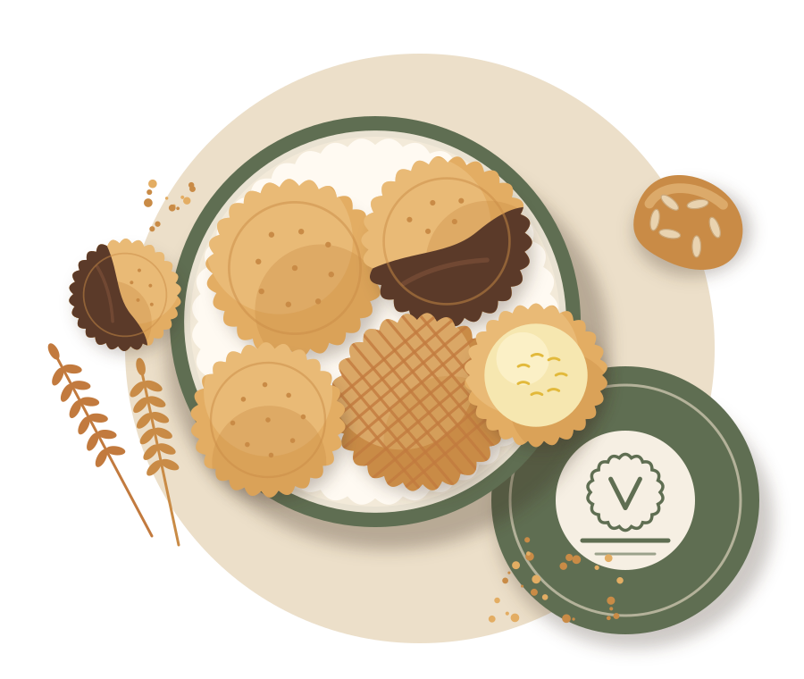
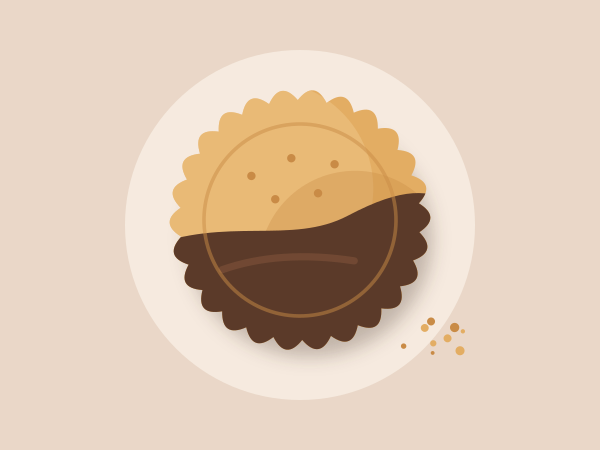
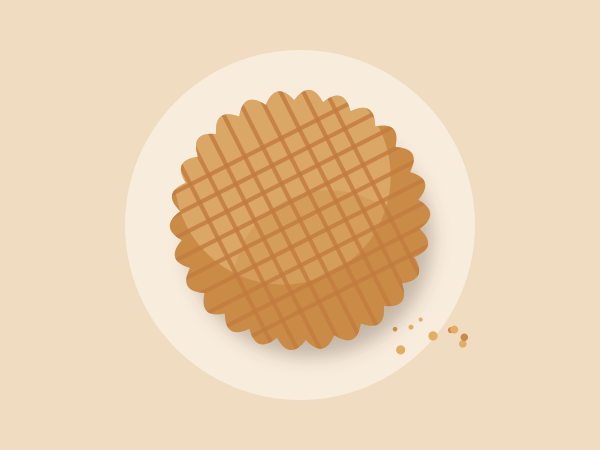
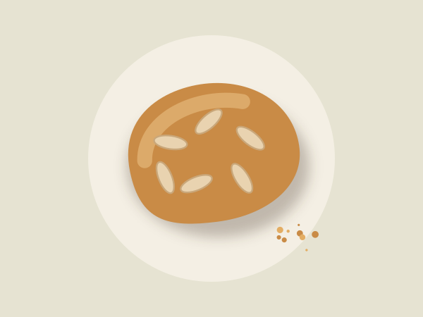
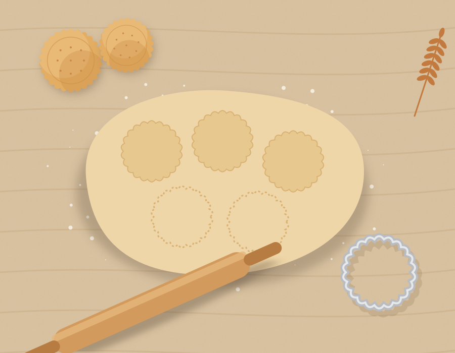

Le classique
Sablé pur beurre
La recette de 1962, croustillant puis fondant.
Boîte métal 250 gVoir →
Biscuiterie artisanale depuis 1962
Un beurre de baratte, une farine moulue à douze kilomètres, et la recette de la grand-mère Vellane. Nos biscuits se trouvent dans plus de 140 épiceries fines en France.

La gamme
Cinq recettes, pas une de plus. Chacune cuite le matin même de son expédition, et emballée à la main dans notre atelier.

Le classique
La recette de 1962, croustillant puis fondant.

Le gourmand
Trempé à la main dans un chocolat noir 64 %.

Le régional
Épaisse, au caramel au beurre salé fait maison.

Le croquant
Des amandes entières, une cuisson longue et lente.

Notre savoir-faire
Chaque nuit, la pâte repose dix-huit heures au frais. Le matin, elle est étalée au rouleau, découpée à l'emporte-pièce cannelé, puis cuite par petites fournées dans le four à sole de 1974.
Rien n'est industrialisé, et c'est voulu : un sablé façonné à la main a ce croustillant irrégulier qu'aucune machine ne sait reproduire.
Professionnels
Épiceries fines, hôtels, restaurants et entreprises : nous préparons des conditionnements adaptés à votre activité, avec des tarifs dégressifs.
Où nous trouver
À la biscuiterie, où vous pouvez voir l'atelier depuis la boutique, et chez nos revendeurs partout en France.
12, route du Moulin
Ouverte toute l'année, dégustation offerte
Plus de 140 épiceries fines